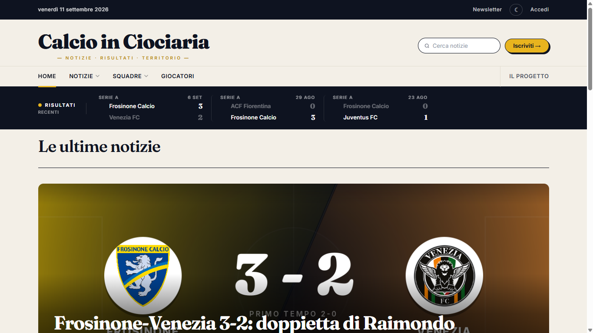
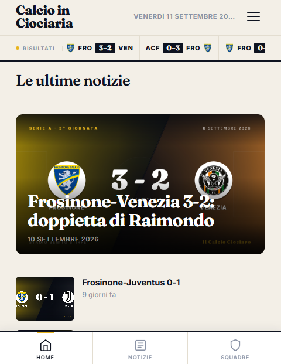
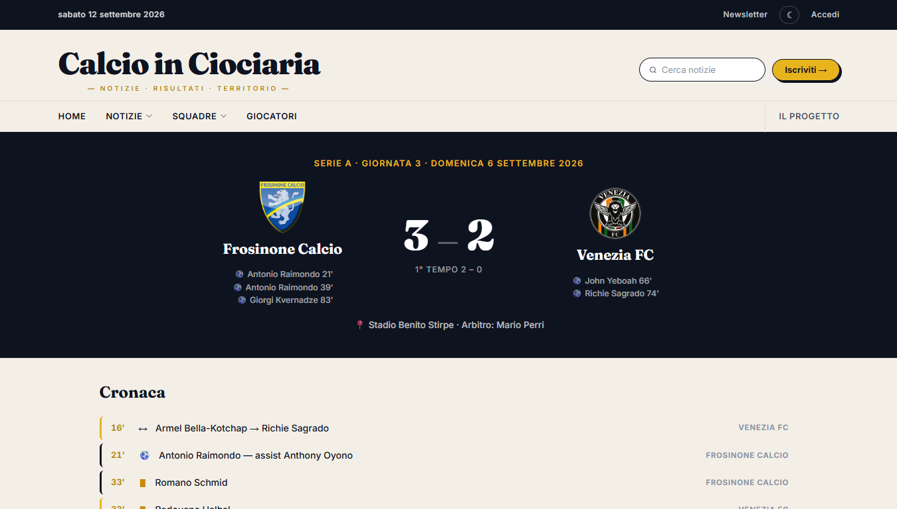
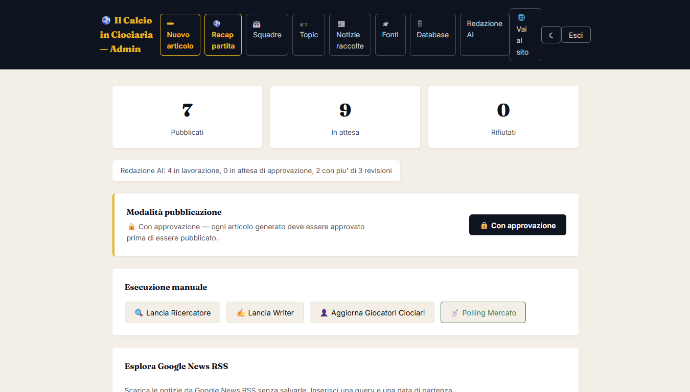
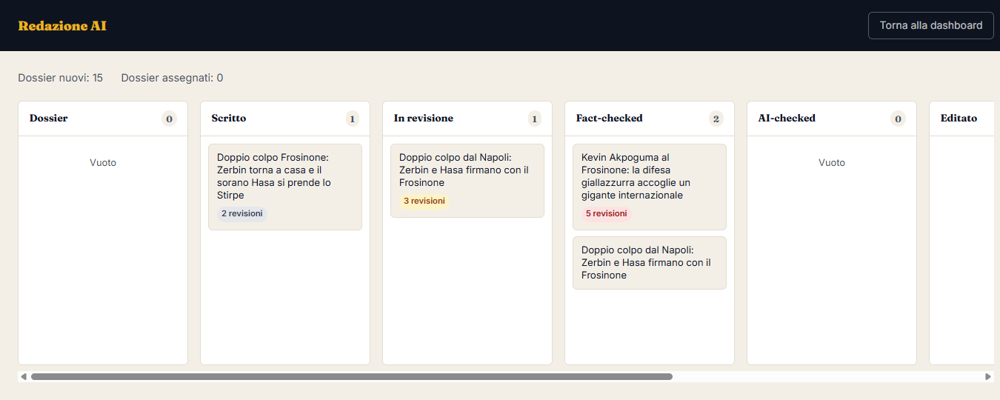

cat case-study.md
Calcio in Ciociaria
Una testata giornalistica online sul calcio della provincia di Frosinone, scritta e mantenuta da una redazione di agenti AI con supervisione umana finale. Progetto personale, sviluppato end-to-end: backend, frontend, pipeline editoriale, infrastruttura.
Overview
Calcio in Ciociaria è una testata sportiva locale che segue le principali società calcistiche della provincia di Frosinone: Frosinone Calcio, Sora, Cassino, Isola Liri, Ferentino, Ceccano e Anagni. Pubblica notizie, cronache delle partite con formazioni e classifica, schede delle squadre e dei giocatori.
La particolarità è che non ha una redazione umana: gli articoli sono prodotti da una pipeline di agenti AI con ruoli distinti (Cronista, Writer, Revisore, AI Checker, Editor, Approver) che raccolgono le fonti, scrivono, correggono e preparano ogni pezzo per la pubblicazione. Un pannello di amministrazione permette di seguire in tempo reale il lavoro degli agenti, approvare o rifiutare le bozze e intervenire manualmente. Ogni articolo dichiara al lettore di essere stato generato con l'aiuto dell'AI e una pagina dedicata spiega come funziona il sistema.
Problema
Seguire con continuità il calcio della provincia di Frosinone richiede di consultare fonti sparse — testate locali, siti ufficiali, social, portali di risultati — e nessuna testata le copre in modo sistematico. Fatto a mano, è un lavoro editoriale quotidiano che una singola persona non può sostenere.
Allo stesso tempo, "far scrivere gli articoli a un LLM" non basta: senza regole e controlli si ottengono pezzi generici, che riassumono le fonti invece di raccontare un fatto, che citano testate terze o inventano dettagli.
Obiettivo
Costruire un flusso editoriale che giri da solo — dalla raccolta delle fonti alla bozza pronta per la pubblicazione — con tre vincoli:
- qualità giornalistica: un solo angolo per articolo, aggancio locale, mai copiare né citare per nome le fonti, tono umano;
- affidabilità dei fatti: ogni affermazione deve essere verificabile sui dati raccolti, e quando un dato manca il sistema non deve inventarlo;
- costi sotto controllo: i modelli si pagano a chiamata, quindi la parte AI deve partire solo quando c'è davvero qualcosa di cui scrivere.
La supervisione umana finale resta per scelta: il sistema prepara, una persona approva.
Il mio ruolo
Progetto personale, ideato e sviluppato in autonomia: dominio e infrastruttura, backend Java/Spring, frontend React del sito pubblico e del pannello admin, progettazione della redazione AI e dei prompt, pipeline di raccolta fonti, deploy e manutenzione in produzione.
È anche il mio banco di prova per un flusso di sviluppo assistito da AI: buona parte del codice è scritta insieme a strumenti di AI coding (Claude Code), con me a definire requisiti, architettura e regole editoriali, e a rivedere quello che viene prodotto.
Architettura generale
lettori ──▶ ┌──────────────────────────────────┐
│ Frontend React (Vite) │ Cloudflare Pages
│ sito pubblico + pannello /admin │
└────────────────┬─────────────────┘
│ HTTPS api.calcioinciociaria.it
┌────────────────▼─────────────────┐
│ Nginx ──▶ Spring Boot (Java 21) │ VPS Ubuntu, systemd
│ REST API · scheduler │
│ redazione AI · pipeline fonti │
└───┬──────────────┬───────────┬───┘
│ │ │
┌──────────▼───┐ ┌───────▼──────┐ ┌─▼──────────────────────┐
│ PostgreSQL │ │ Fetcher │ │ API esterne │
│ (Supabase) │ │ Python + │ │ LLM APIs │
│ │ │ curl_cffi │ │ Google News RSS · feed │
└──────────────┘ │ solo locale │ │ YouTube · Pexels │
└──────────────┘ │ Transfermarkt · Wiki │
└────────────────────────┘
Il progetto è un monorepo con tre componenti che girano separati:
- Backend — un'applicazione Spring Boot che espone le API pubbliche (articoli, squadre, partite) e quelle protette del pannello admin, ospita gli agenti della redazione AI, le pipeline di raccolta fonti e gli scheduler. Gira su un VPS Ubuntu come servizio systemd, dietro un reverse proxy Nginx con certificato Let's Encrypt.
- Frontend — una SPA React (Vite) che serve sia il sito pubblico sia il pannello di amministrazione; è pubblicata su Cloudflare Pages con deploy automatico a ogni push.
- Fetcher — un piccolo servizio Python, raggiungibile solo in localhost, che scarica le pagine dei portali sportivi che bloccano i client HTTP Java (vedi Problemi e soluzioni).
I dati vivono su PostgreSQL (Supabase). Il deploy del backend è automatizzato con GitHub Actions, che a ogni push si collega via SSH al server, ricompila il JAR e riavvia il servizio. Il pannello admin riceve i log degli agenti in tempo reale tramite Server-Sent Events.
Stack tecnologico
Backend
Frontend
Dati e AI
Infrastruttura
Funzionamento della pipeline AI
La redazione è modellata sui ruoli di una redazione vera. Ogni ruolo è un servizio Java con il proprio prompt e il proprio modello, e un orchestratore li incatena in-process; le transizioni di stato di un articolo passano tutte da un unico servizio che rende impossibili i passaggi illeciti e mantiene lo storico delle revisioni.
[ogni ora — nessuna chiamata LLM]
Google News RSS · feed testate locali · Google Alerts · YouTube · radar Trends
│ dedup per URL · assegnazione del topic (TopicMatcher)
▼
raw_sources ──▶ almeno 3 fonti nuove su un topic? ──no──▶ stop, costo zero
│ sì
▼
Cronista ──▶ dossier + factSheet (ricerca web per verificare e completare)
▼
Writer ──▶ bozza articolo (regole editoriali nel system prompt)
▼
Revisore ◀────────────────┐ (corregge sul factSheet, non inventa)
▼ │
AI Checker ─── REVISE ────┘ (modello diverso, legge solo il testo)
│ PASS └── dopo 3 giri: escalation al Cronista
▼
Editor ──▶ titolo, meta description, tag, immagine dal pool
▼
Approver ──▶ pronto per l'approvazione ──▶ ok dell'admin ──▶ pubblicato
1. Raccolta fonti (deterministica, ogni ora)
Un job orario interroga Google News RSS per ogni topic seguito, i feed RSS delle testate locali e del sito ufficiale del Frosinone, gli alert Google in formato RSS, i canali YouTube locali via YouTube Data API e un "radar" Google Trends filtrato per parole chiave. Le fonti vengono deduplicate per URL e assegnate a un topic da un matcher che usa gli stessi alias delle query di ricerca. Tutto questo non costa nulla: nessun modello viene chiamato.
2. Dispatch
Solo se un topic ha accumulato almeno tre fonti nuove dall'ultimo giro parte la parte costosa della pipeline. È il modo con cui il sistema evita di scrivere articoli "perché è ora" invece che "perché è successo qualcosa".
3. Cronista
Decide cosa merita un articolo. Parte dai titoli raccolti — che da soli non bastano quasi mai — e usa un modello con ricerca web integrata per verificare e completare cifre, date, dichiarazioni. Il risultato è un dossier con un factSheet: l'elenco chiuso dei fatti su cui gli altri ruoli potranno basarsi.
4. Writer
Scrive l'articolo dal dossier seguendo regole editoriali fisse nel system prompt: mai citare le fonti per nome, un solo angolo narrativo, lunghezza contenuta, aggancio locale obbligatorio, prendere una posizione, tono umano. Restituisce JSON strutturato (titolo, sommario, corpo, meta description, tag).
5. Revisore e AI Checker
Il Revisore confronta il testo con il factSheet e corregge direttamente; se un'affermazione sembra sbagliata ma il dato corretto non c'è, non inventa un valore plausibile: lascia la frase e segnala il problema. L'AI Checker usa un modello di famiglia diversa e legge solo titolo e corpo, senza dossier né storico: deve giudicare come un lettore qualsiasi se il pezzo "sembra scritto da un giornalista vero". I due lavorano in loop; dopo tre giri senza esito il dossier torna al Cronista, e un tetto assoluto di revisioni impedisce comunque rimbalzi infiniti.
6. Editor e Approver
L'Editor fa il lavoro meccanico: titolo definitivo, meta description, tag e scelta dell'immagine da un pool raccolto da Pexels e Wikimedia Commons. L'Approver fa un'ultima lettura d'insieme. In modalità approvazione (default) l'articolo resta bozza finché non lo approvo dal pannello; esiste una modalità automatica che pubblica direttamente.
Pipeline dedicate
- Calciomercato — polling paginato di siti specializzati con Jsoup, filtro sul titolo per squadre e giocatori seguiti, estrazione strutturata della trattativa con un LLM (output JSON: giocatore, club, tipo di trasferimento, cifre), arricchimento con Transfermarkt e Wikipedia, scrittura dell'articolo.
- Cronache delle partite — sincronizzazione dei dati delle sette società ogni sei ore (risultati, eventi, formazioni), snapshot della classifica al momento del match e cronaca scritta da un generatore NLG a regole, senza nessuna chiamata a un modello a runtime (vedi la decisione Compiled AI qui sotto).
Principali decisioni tecniche
-
LLM solo su segnale deterministico
Dopo un picco di consumo inatteso, ho separato nettamente la raccolta (gratis, ogni ora) dalla generazione (a pagamento, solo quando un topic supera una soglia di fonti nuove). Il costo segue le notizie, non l'orologio.
-
Ruoli separati, modelli diversi
Ogni ruolo della redazione ha il proprio modello, scelto per il compito: il Cronista usa un modello con ricerca web integrata, il Writer un modello diverso da quello del Revisore, l'AI Checker un modello di un'altra famiglia ancora, per ridurre il bias di autovalutazione. Quali modelli usare per quali ruoli è una scelta ancora aperta, e per questo è isolata dietro un'unica interfaccia
LlmClient: cambiare provider o modello a un ruolo non tocca la logica della redazione. -
Compiled AI dove i dati sono già strutturati
Le cronache delle partite non passano per un LLM. Seguendo il principio della Compiled AI descritto da Trooskens et al. in Compiled AI: Deterministic Code Generation for LLM-Based Workflow Automation (2026), il modello lavora una volta sola, in fase di "compilazione", per produrre la logica di generazione; a runtime gira solo un generatore NLG a regole, deterministico, che trasforma risultato, marcatori, cartellini, cambi e classifica in testo. Zero chiamate a modelli, nessuna latenza, nessuna quota e lo stesso match produce sempre la stessa cronaca: ogni parola discende da un campo popolato, quindi il testo non può dire più di quanto i dati sappiano. Lo stesso schema — modello a compile-time, validatori deterministici, artefatti eseguiti senza modelli — è quello previsto per la ricerca delle fonti di ogni società.
-
Il Revisore non inventa: escalation
Quando un dato manca, la scelta giusta è tornare a chi fa ricerca, non "aggiustare" il testo con un valore plausibile. Le transizioni di stato sono centralizzate e hanno un tetto massimo di revisioni.
-
Human-in-the-loop per scelta
La pipeline porta l'articolo fino a "pronto per l'approvazione"; la pubblicazione la decide una persona. È la stessa impostazione delle redazioni che usano l'AI in produzione, e la modalità automatica esiste ma è opt-in.
-
Fatti, non testo: rispetto delle fonti
Dai feed RSS si legge solo la descrizione, mai il contenuto integrale, così il Writer riceve fatti da cui scrivere e non testo da riformulare. Le fonti che dichiarano un opt-out per usi AI nel proprio
robots.txtsono escluse. -
Un motore generico per le fonti
Invece di un servizio per ogni testata, un solo motore RSS configurabile dal pannello admin (URL, topic di default, filtro keyword). Aggiungere una fonte è una riga in tabella, non codice nuovo.
-
Trasparenza verso il lettore
Ogni articolo chiude con una nota che dichiara l'uso dell'AI e le fonti, e una pagina "Come funziona" spiega la pipeline.
Problemi affrontati e soluzioni
-
I portali sportivi rispondono 403 ai client Java
Problema Sofascore e altri portali non guardano lo user-agent ma l'impronta TLS/HTTP2 del client: OkHttp, Jsoup e l'HttpClient del JDK vengono riconosciuti dal ClientHello e bloccati prima ancora di leggere un header.
Soluzione Un micro-servizio Python separato basato su
curl_cffi, che replica il ClientHello di Chrome. Ascolta solo su localhost, gira come servizio systemd senza privilegi e, per scelta, non esegue JavaScript né risolve CAPTCHA: se un sito richiede quello, la risposta giusta è non usarlo. -
I titoli RSS non bastano per scrivere
Problema Verificato sui dati reali: il campo "content" di Google News RSS è quasi sempre un wrapper HTML del link, non un estratto leggibile. Un Cronista che lavora solo sui titoli produce factSheet troppo poveri.
Soluzione Il Cronista usa i titoli come piste e un modello con grounding web per cercare, verificare e completare i fatti prima di scrivere il factSheet.
-
Loop di revisione potenzialmente infinito
Problema Revisore e AI Checker possono rimandarsi un articolo a vicenda senza mai convergere.
Soluzione Soglia di escalation al Cronista dopo tre giri, tetto assoluto di revisioni imposto nel servizio che governa le transizioni di stato (indipendente dall'orchestratore) e un ulteriore backstop locale nel loop.
-
Seed dei topic bloccato da un database preesistente
Problema Il seeding iniziale dei topic era protetto da una guardia "se la tabella non è vuota, esci". In produzione la tabella conteneva già tre righe di un'origine precedente: nove topic non sono mai stati creati, e le fonti relative venivano scartate in silenzio dal matcher.
Soluzione Topic ricreati con gli stessi dati del seed e lezione imparata: le guardie di idempotenza vanno fatte per singolo record, non per tabella.
-
Le API dei social non sono accessibili a uno sviluppatore singolo
Problema Meta richiede una verifica aziendale, X è a pagamento, Reddit ha approvazioni lunghe e poco contenuto locale, Telegram richiede di essere amministratori dei canali altrui.
Soluzione Solo YouTube Data API, usando la playlist "uploads" del canale invece della ricerca (1 unità di quota per pagina invece di 100) e mettendo in cache la risoluzione handle → channel id.
-
Disponibilità e quota dei modelli
Problema Un singolo modello può essere temporaneamente non disponibile o esaurire la quota, e la pipeline non deve fermarsi per questo.
Soluzione Il client LLM prova una catena di modelli in ordine di preferenza; la catena è condivisa da tutti i servizi che lo usano.
Screenshot





Risultati e metriche
- [n]articoli pubblicati
- [n]fonti monitorate
- 7società seguite
- [n][altra metrica]
[Breve commento sui risultati.]
Link
Il sito è in sviluppo e al momento è raggiungibile solo in anteprima riservata; il codice non è pubblico.